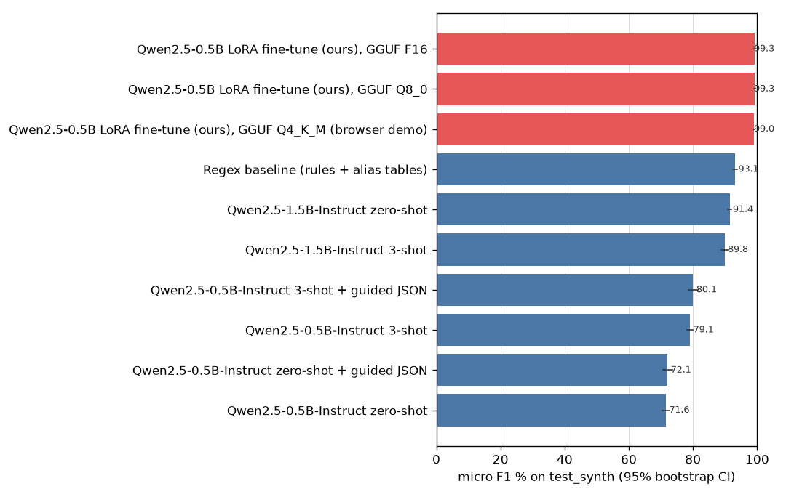
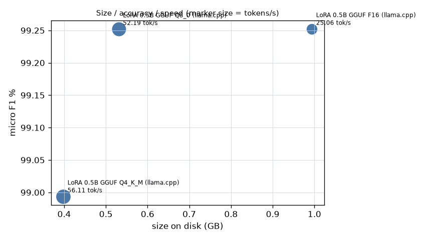
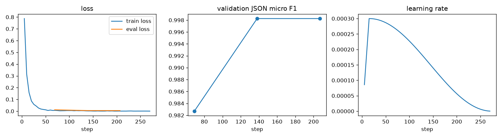

Messy Indian job postings (LPA / lakh / per-month salaries, Hinglish, WhatsApp forwards) to one strict JSON object. A LoRA fine-tune of Qwen2.5-0.5B-Instruct, trained on free GitHub-hosted CPU runners. Code · Model files
The model runs entirely on your device with wllama (llama.cpp compiled to WebAssembly). First load: the model. Inference is single-threaded (GitHub Pages cannot send the headers multi-threading needs), so an extraction takes roughly 20-60 s.
{}Generated by CI from committed prediction files. Rows marked "pending" have not been run yet; no number on this page is estimated.


test_real, headline)_The real test set is pending: it needs real postings fetched, draft labels and a human pass with jobx verify (see docs/real_dataset.md)._
| Approach | Hardware | n | JSON valid % | Schema valid % | Field EM % | Micro F1 % [95% CI] | Macro F1 % | Hallucination % [95% CI] | Status |
|---|---|---|---|---|---|---|---|---|---|
| Regex baseline (rules + alias tables) | CPU | - | - | - | - | - | - | - | pending (needs this split) |
| Qwen2.5-0.5B-Instruct zero-shot | CPU (GitHub Actions) | - | - | - | - | - | - | - | pending CPU run |
| Qwen2.5-0.5B-Instruct zero-shot + guided JSON | CPU (GitHub Actions) | - | - | - | - | - | - | - | pending CPU run |
| Qwen2.5-0.5B-Instruct 3-shot | CPU (GitHub Actions) | - | - | - | - | - | - | - | pending CPU run |
| Qwen2.5-0.5B-Instruct 3-shot + guided JSON | CPU (GitHub Actions) | - | - | - | - | - | - | - | pending CPU run |
| Qwen2.5-1.5B-Instruct zero-shot | CPU (GitHub Actions) | - | - | - | - | - | - | - | pending CPU run |
| Qwen2.5-1.5B-Instruct 3-shot | CPU (GitHub Actions) | - | - | - | - | - | - | - | pending CPU run |
| Qwen2.5-0.5B LoRA fine-tune (ours), GGUF F16 | CPU (GitHub Actions) | - | - | - | - | - | - | - | pending CPU run |
| Qwen2.5-0.5B LoRA fine-tune (ours), GGUF Q8_0 | CPU (GitHub Actions) | - | - | - | - | - | - | - | pending CPU run |
| Qwen2.5-0.5B LoRA fine-tune (ours), GGUF Q4_K_M (browser demo) | CPU (GitHub Actions) | - | - | - | - | - | - | - | pending CPU run |
| GPT-OSS-120B via Groq (API, few-shot) | Groq API (free tier) | - | - | - | - | - | - | - | pending API run |
_15 optional GPU-route rows (1.5B/7B baselines, 1.5B QLoRA, AWQ; need a GPU plus Hugging Face and W&B accounts) were not run; see docs/gpu_route.md._
test_synth)| Approach | Hardware | n | JSON valid % | Schema valid % | Field EM % | Micro F1 % [95% CI] | Macro F1 % | Hallucination % [95% CI] | Status |
|---|---|---|---|---|---|---|---|---|---|
| Regex baseline (rules + alias tables) | CPU | 471 | 100.0 | 100.0 | 91.1 | 93.1 [92.5, 93.8] | 90.8 | 2.5 [1.7, 3.2] | measured 2026-11-03 @902cc8a |
| Qwen2.5-0.5B-Instruct zero-shot | CPU (GitHub Actions) | 471 | 96.2 | 0.0 | 54.2 | 71.6 [70.4, 72.7] | 56.2 | 67.1 [64.2, 69.8] | measured 2026-11-03 @971e1dc |
| Qwen2.5-0.5B-Instruct zero-shot + guided JSON | CPU (GitHub Actions) | 200 | 99.5 | 77.5 | 54.7 | 72.1 [70.6, 73.6] | 54.5 | 73.0 [69.4, 76.6] | measured 2026-11-03 @971e1dc |
| Qwen2.5-0.5B-Instruct 3-shot | CPU (GitHub Actions) | 471 | 99.4 | 23.6 | 66.0 | 79.1 [78.1, 80.0] | 65.1 | 43.7 [41.4, 46.4] | measured 2026-11-03 @971e1dc |
| Qwen2.5-0.5B-Instruct 3-shot + guided JSON | CPU (GitHub Actions) | 200 | 99.0 | 99.0 | 66.5 | 80.1 [78.5, 81.4] | 66.2 | 44.2 [40.6, 48.1] | measured 2026-11-03 @971e1dc |
| Qwen2.5-1.5B-Instruct zero-shot | CPU (GitHub Actions) | 471 | 100.0 | 5.1 | 84.4 | 91.4 [90.8, 92.1] | 86.0 | 35.3 [32.6, 37.6] | measured 2026-11-03 @971e1dc |
| Qwen2.5-1.5B-Instruct 3-shot | CPU (GitHub Actions) | 471 | 97.5 | 40.3 | 84.0 | 89.8 [88.8, 90.8] | 85.8 | 21.7 [19.8, 23.7] | measured 2026-11-03 @971e1dc |
| Qwen2.5-0.5B LoRA fine-tune (ours), GGUF F16 | CPU (GitHub Actions) | 471 | 100.0 | 99.6 | 98.8 | 99.3 [99.1, 99.5] | 99.0 | 1.9 [1.2, 2.6] | measured 2026-11-04 @fcdc48b |
| Qwen2.5-0.5B LoRA fine-tune (ours), GGUF Q8_0 | CPU (GitHub Actions) | 471 | 100.0 | 99.8 | 98.8 | 99.3 [99.1, 99.5] | 98.9 | 1.7 [1.0, 2.3] | measured 2026-11-04 @fcdc48b |
| Qwen2.5-0.5B LoRA fine-tune (ours), GGUF Q4_K_M (browser demo) | CPU (GitHub Actions) | 471 | 100.0 | 99.8 | 98.5 | 99.0 [98.8, 99.2] | 98.5 | 2.0 [1.3, 2.7] | measured 2026-11-04 @fcdc48b |
| GPT-OSS-120B via Groq (API, few-shot) | Groq API (free tier) | - | - | - | - | - | - | - | incomplete (39/200) |
_15 optional GPU-route rows (1.5B/7B baselines, 1.5B QLoRA, AWQ; need a GPU plus Hugging Face and W&B accounts) were not run; see docs/gpu_route.md._
test_synth)| Approach | company | role | seniority | skills | min_experience_years | max_experience_years | salary | locations | work_mode | employment_type | education |
|---|---|---|---|---|---|---|---|---|---|---|---|
| Regex baseline (rules + alias tables) | 48.2 | 75.4 | 79.2 | 99.4 | 100.0 | 100.0 | 100.0 | 100.0 | 100.0 | 100.0 | 100.0 |
| Qwen2.5-0.5B-Instruct zero-shot | 84.7 | 93.6 | 42.3 | 77.1 | 25.7 | 29.3 | 52.4 | 67.7 | 57.5 | 49.0 | 17.0 |
| Qwen2.5-0.5B-Instruct zero-shot + guided JSON | 88.0 | 96.0 | 44.5 | 90.0 | 21.0 | 25.0 | 54.5 | 70.0 | 56.5 | 49.5 | 6.5 |
| Qwen2.5-0.5B-Instruct 3-shot | 55.6 | 97.7 | 51.2 | 74.5 | 92.4 | 86.2 | 52.0 | 70.1 | 49.5 | 44.6 | 51.8 |
| Qwen2.5-0.5B-Instruct 3-shot + guided JSON | 61.0 | 96.0 | 46.5 | 74.5 | 89.0 | 82.5 | 51.5 | 70.0 | 60.0 | 53.0 | 47.0 |
| Qwen2.5-1.5B-Instruct zero-shot | 83.4 | 99.2 | 78.6 | 98.1 | 93.6 | 89.2 | 80.5 | 92.6 | 66.7 | 62.2 | 84.1 |
| Qwen2.5-1.5B-Instruct 3-shot | 86.6 | 97.2 | 74.7 | 81.1 | 93.2 | 87.9 | 76.4 | 89.2 | 77.1 | 68.8 | 91.9 |
| Qwen2.5-0.5B LoRA fine-tune (ours), GGUF F16 | 96.8 | 97.9 | 99.6 | 99.4 | 99.6 | 99.8 | 98.5 | 99.4 | 96.2 | 99.8 | 100.0 |
| Qwen2.5-0.5B LoRA fine-tune (ours), GGUF Q8_0 | 96.8 | 97.9 | 99.6 | 99.4 | 99.8 | 100.0 | 98.1 | 99.4 | 96.4 | 99.8 | 100.0 |
| Qwen2.5-0.5B LoRA fine-tune (ours), GGUF Q4_K_M (browser demo) | 96.6 | 98.1 | 99.4 | 99.4 | 99.8 | 100.0 | 95.8 | 99.4 | 95.5 | 99.8 | 100.0 |
Partial runs, or runs with more than 5% failed requests, are scored on what completed and shown here only.
| Approach | Split | Status | Error rate % | n scored | Micro F1 % | JSON valid % |
|---|---|---|---|---|---|---|
| GPT-OSS-120B via Groq (API, few-shot) | test_synth | incomplete (39/200) | 0.0 | 39 | 97.6 | 100.0 |
| Approach | Split | Model | Requests | Input tokens | Output tokens | Cost (USD) |
|---|---|---|---|---|---|---|
| GPT-OSS-120B via Groq (API, few-shot) | test_synth | openai/gpt-oss-120b (39) | 39 | 70610 | 18916 | 0.00 |
| Variant | Hardware | Size (GB) | Micro F1 % | Tokens/s | Peak memory (GB) | Status |
|---|---|---|---|---|---|---|
| LoRA 0.5B GGUF F16 (llama.cpp) | CPU (INTEL(R) XEON(R) PLATINUM 8573C, 4 threads, GitHub Actions) | 0.994 | 99.3 | 25.06 | 1.042 | measured 2026-11-04 |
| LoRA 0.5B GGUF Q8_0 (llama.cpp) | CPU (AMD EPYC 7763 64-Core Processor, 4 threads, GitHub Actions) | 0.531 | 99.3 | 52.19 | 0.611 | measured 2026-11-04 |
| LoRA 0.5B GGUF Q4_K_M (llama.cpp) | CPU (AMD EPYC 7763 64-Core Processor, 4 threads, GitHub Actions) | 0.398 | 99.0 | 56.11 | 0.514 | measured 2026-11-04 |
